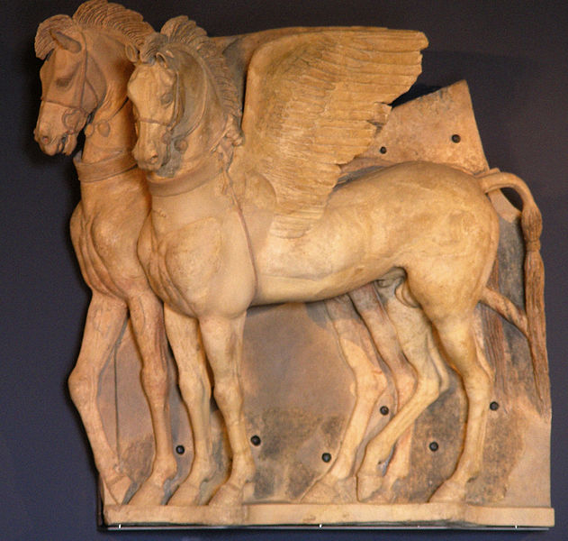
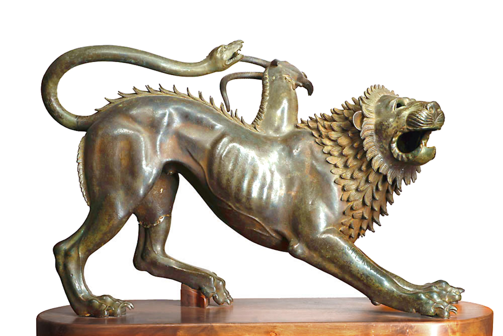
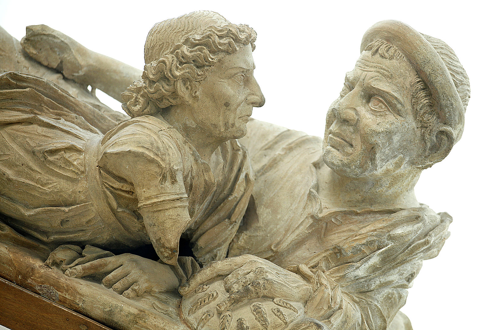
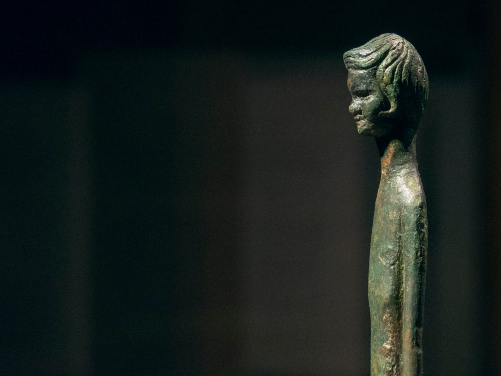
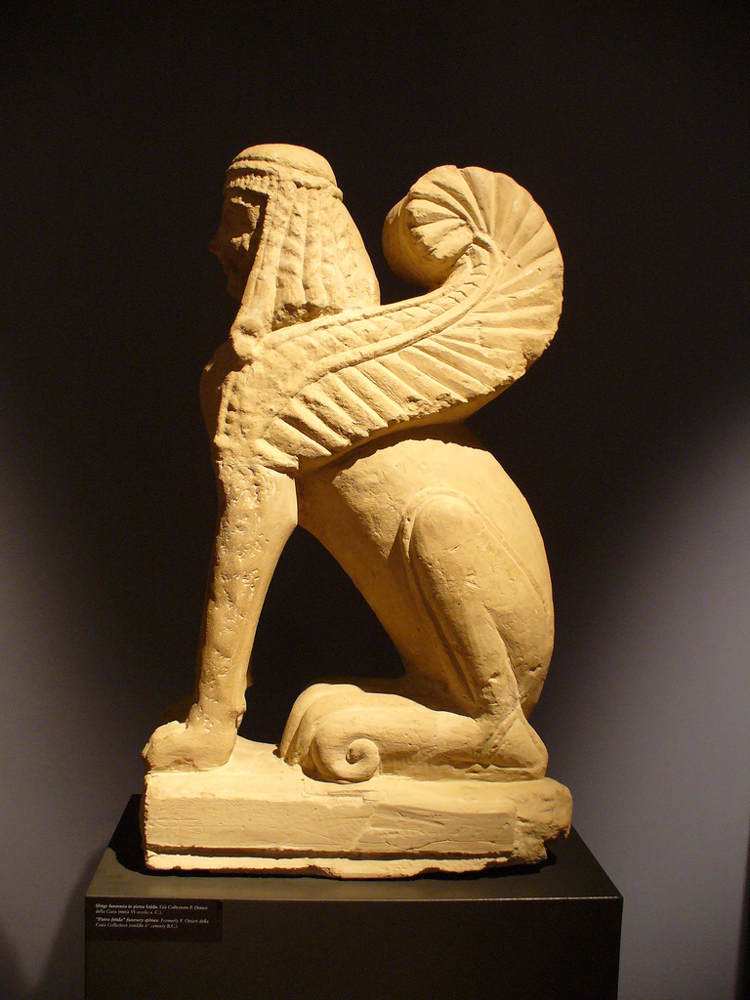
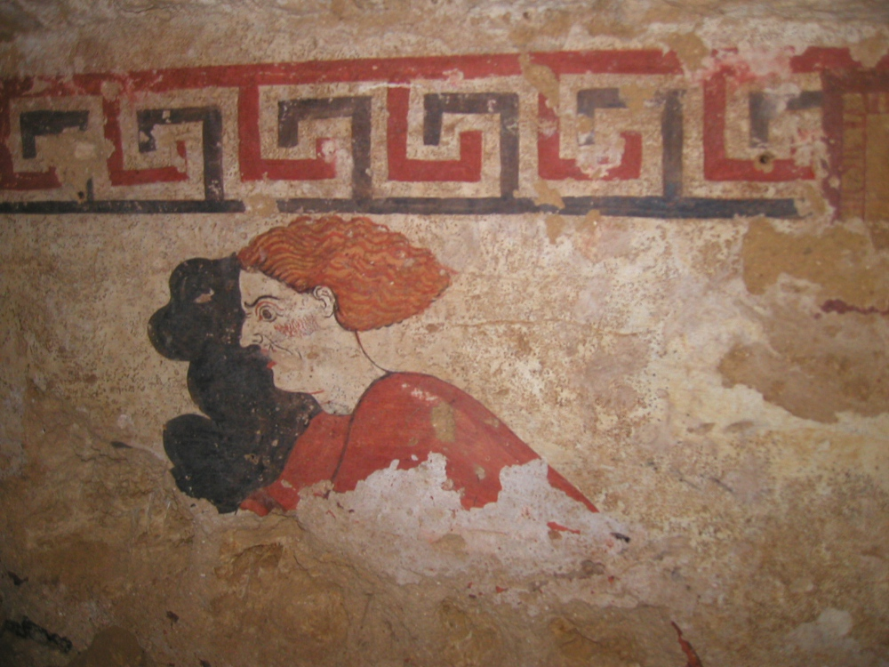

“Uno Dei Più Prestigiosi Musei Dedicati Alla Civiltà Degli Etruschi”
TripAdvisor Travellers’ Choice Award
Il Museo Archeologico Nazionale Degli Etruschi Di Roma vince per il secondo anno consecutivo il TripAdvisor Travellers’ Choice Award per la categoria “Attrazioni del mondo”.
Un Oscar delle destinazioni turistiche che celebra i luoghi di cultura o gli ambienti naturali che hanno ricevuto ottime recensioni da parte di viaggiatori provenienti da tutto il mondo nell’arco degli ultimi 12 mesi.
Un riconoscimento che nei difficili anni della pandemia elogia non solo il meglio della proposta turistico-culturale, ma anche gli elevati standard di sicurezza e la disponibilità della meta turistica prescelta, capace di venire incontro al viaggiatore anche attraverso l’utilizzo di nuove tecnologie e offerte comunicative e culturali integrate.
Apertura Straordinaria 12 Dicembre 2022 Ingresso Gratuito
Questionario di soddisfazione dei visitatori
Le saremmo grati se volesse dedicare qualche minuto per rispondere al questionario on line, che intende misurare il grado di soddisfazione dei visitatori dei Musei Italiani.
La sua opinione sarà utile per migliorare la qualità della visita e dei servizi offerti dai singoli Musei, ma anche l’immagine del Sistema Museale Nazionale nel suo insieme.
INGRESSO AL MUSEO
La prenotazione on line del biglietto di ingresso al Museo Degli Etruschi Di Roma non è obbligatoria ma soltanto consigliata.
Il biglietto di ingresso è acquistabile direttamente al Museo, con Bancomat o Carta di credito (non potrà essere acquistato in contanti), e on-line su shopmuseodeglietruschidiroma.it
Nel caso di acquisto di biglietto per più visitatori, si consiglia di effettuare un’unica operazione di prenotazione per tutti i partecipanti alla visita,
per assicurarsi l’ingresso nella stessa fascia oraria.
APERTURA STRAORDINARIA 1-2 GENNAIO 2023!
Domenica 1 Gennaio, il Museo Degli Etruschi Di Roma sarà aperto dalle 9.00 alle 13.00 e dalle 16.30 alle 19.30, con ultimo ingresso alle ore 19.00.
L’accesso al Museo Degli Etruschi Di Roma sarà gratuito e sarà possibile prenotare la visita guidata delle ore 9.00.
Lunedì 2 Gennaio, il Museo sarà aperto dalle 8.30 alle 19.30, con ultimo ingresso alle ore 19.00.
Approfonfimenti
Le Nostre Opere:






I Nostri Orari
Gli orari, i giorni di apertura, le tariffe e le agevolazioni per l’ingresso al Museo Degli Etruschi Di Roma, per organizzare al meglio la tua visita.
I Percorsi Espositivi
Dal Paleolitico all’Età medievale, il Museo Degli Etruschi Di Roma ospita la memoria di uomini e donne che hanno vissuto l’Italia meridionale.